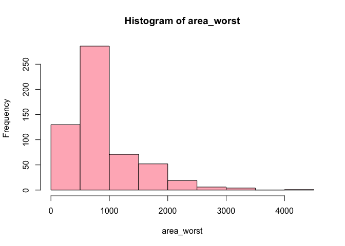

The goal of histogramr package is to help create histograms easily, using minimal inputs. The histogram function can also be tweaked and desired additions can be made to it. Additionally, it can handle errors and give error messages (if any) based on the input.
You can install the development version of histogramr from GitHub with:
# install.packages("devtools")
devtools::install_github("stat545ubc-2023/histogramr")This is a basic example which shows you how to solve a common problem:
library(histogramr)
# Example used from the `cancer_sample` dataset from the `datateachr` package.
#Laod `datateachr` package
library(datateachr)
hist1 <- histogram(cancer_sample, var = "area_worst")
print(hist1)
#> $breaks
#> [1] 0 500 1000 1500 2000 2500 3000 3500 4000 4500
#>
#> $counts
#> [1] 130 286 71 52 19 6 4 0 1
#>
#> $density
#> [1] 4.569420e-04 1.005272e-03 2.495606e-04 1.827768e-04 6.678383e-05
#> [6] 2.108963e-05 1.405975e-05 0.000000e+00 3.514938e-06
#>
#> $mids
#> [1] 250 750 1250 1750 2250 2750 3250 3750 4250
#>
#> $xname
#> [1] "data[[var]]"
#>
#> $equidist
#> [1] TRUE
#>
#> attr(,"class")
#> [1] "histogram"